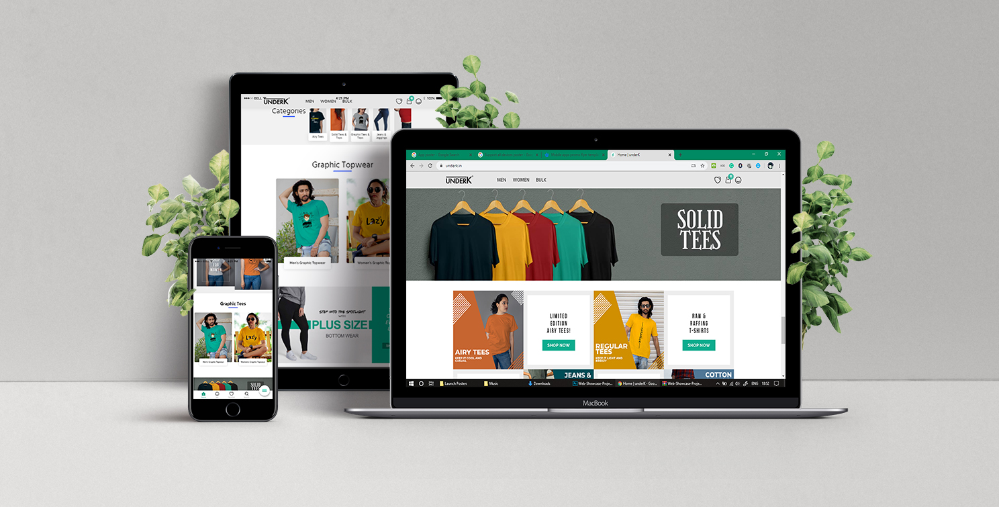

underK
#1. Overview
UnderK is an e-commerce store with a “Customer First” belief that sells products ranging from apparel, shoes and many more, all under ₹1,000/- and thus the name “underK”. The core belief of the firm lies in providing “value for money” products and proving that quality can be inexpensive.

#2. Understanding the problem.
As a college student, I understood the pains of not being able to spend a lot of money on clothing. I wanted to validate these problems so I took the initiative to conduct interviews with several of my peers. In order to gain perspective of people from other displines and age groups, I then extended these interviews to involve people from different domains of life.
In order to create a responsive eCommerce website that can:
- Tell the brand's story alongside the products,
- Immerse the user into a comfortable shopping experience,

After listening to these potential clients, we discovered the top demands/features:
- Easy access to bestsellers and popular products from the home page.
- Access to cart/bag from every page in the website.
- View and select specific category easily.
- Hasslefree Login.
- Fast and accurate searching capabily throughout our product catalogue.
#3. User personas.
Based on our research, we recognised the following key user types that our product tried to solve problems for.

Sarah, 26
Pain Point : Can I change the quantity of the products I add to my bag/cart?
Crystal, 28
Pain Point : How do I know these products are worth purchasing and reliable?